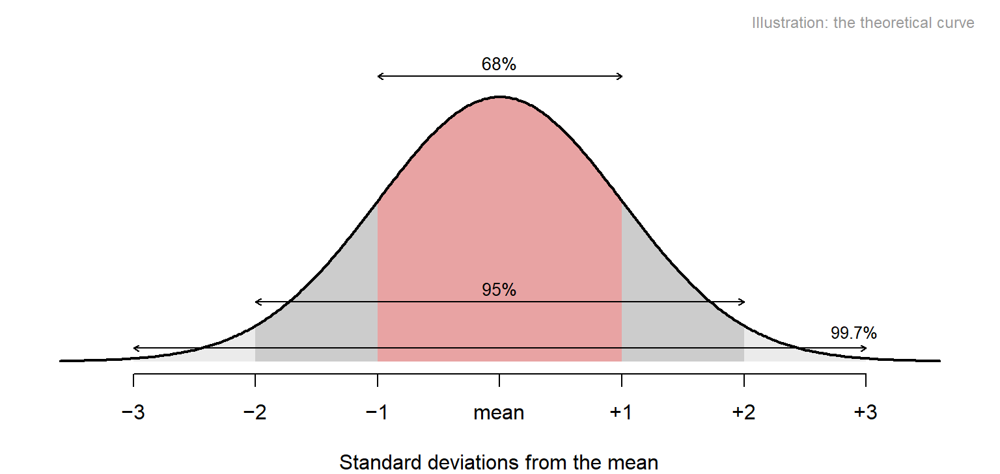
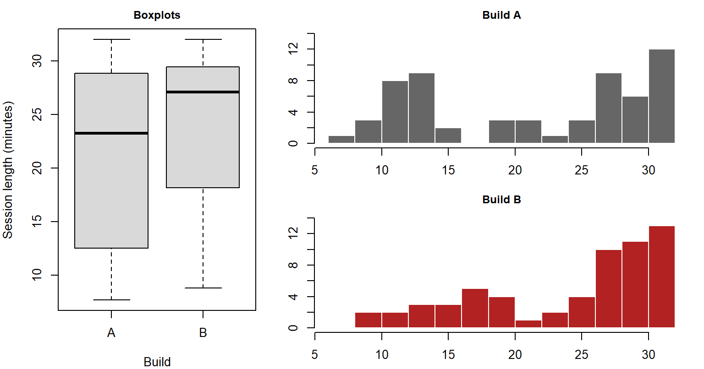
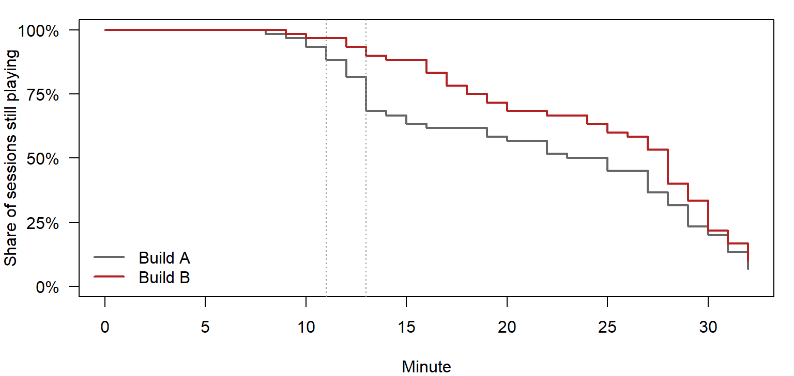
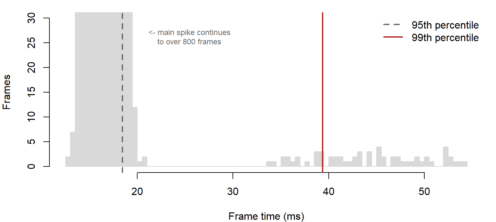
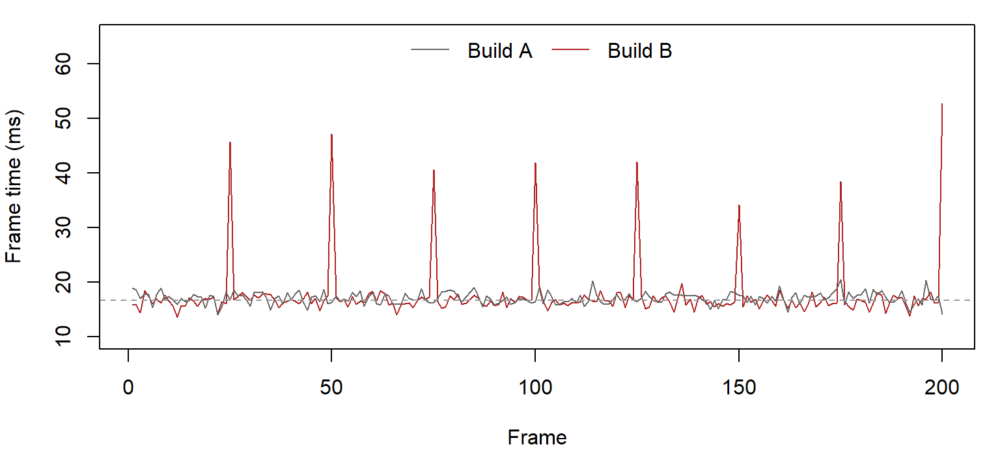

![Eight histograms in two rows. Top row, simulated: a symmetric bell, a right-skewed shape with a long right tail, a left-skewed shape with a long left tail, and a two-humped shape. Bottom row, Tidebreak: awareness, roughly symmetric with mean and median together; Build B frame times, a spike cut off at the top with a long thin right tail of slow frames; session length, piled up against 32 minutes with a tail to the left; Sentinel score, a small group of low scores and a larger group of high scores. In each skewed panel the mean sits further towards the tail than the median.](05-distributions-and-shape_files/figure-html/fig-shapes-1.png)
Distributions and Shape
Why the average is never the whole story
A summary is a single number standing in for a whole column. This page is about what it stands in for: the distribution, the full pattern of values. It names the shapes you will meet, deals with outliers, shows how to compare two groups’ distributions, and shows why the most important number in a performance capture is one that hardly anyone quotes. The playtest question running through it: “Both builds run at 59 FPS. Which one runs better?”
Stage: 1 · Core. Time: 30 minutes in class; 20 more for the Going further page. Before this: Describing Variables. Key terms: distribution, symmetric, skew, bimodal, floor, ceiling, normal distribution, tail, outlier, percentile, retention curve. R you will write: hist(), boxplot(), quantile(), abline(), and group_by() with summarise() from Describing Variables.
Learning Outcomes
By the end of these notes you can:
- describe a distribution by its shape: symmetric, skewed left or right, bimodal, bounded by a floor or ceiling;
- say which way skew pulls the mean, and why game data is rarely symmetric;
- say what the normal distribution is, and why most game measures do not follow it;
- say whether an outlier is an error, an extreme player or the finding itself, and what to do in each case;
- compare two groups’ distributions, including with a retention curve;
- read the mean, median, SD and high percentiles together and say what each adds.
Why This Matters for Playtesting
Every design question is really a question about players, plural, and players differ. A level that takes eight minutes on average can be a level everyone finishes in eight minutes, or a level half the testers finish in four and the other half abandon. Those are different games with different fixes, and the average cannot tell them apart.
The players you design for are rarely the average player. The ones who quit, the ones who get stuck, the ones whose machine stutters: they live in the edges of the distribution, and the edges are exactly what a mean averages away.
Variation is information, not noise. When two builds differ in how spread out their players are, that difference is often the finding. A build that tightens the spread has made the experience more consistent, even if the average has not moved.
What a Distribution Is
A distribution is the full pattern of a variable’s values: which values occur, and how often. A histogram draws it. Every summary statistic is an attempt to describe a distribution in one number, and every one of them fails for some distribution.
Describing a distribution means saying four things about its picture:
- Centre: where the bulk sits.
- Spread: how wide the bulk is.
- Shape: symmetric or lopsided, one hump or two, cut off at an edge or not.
- Unusual values: anything sitting apart from the rest.
The first two were Describing Variables. This page is about the last two.
The Shapes You Will Meet
Symmetric. The two sides mirror each other. The mean and median sit together, and either describes the centre. Tidebreak’s awareness rating is close to symmetric: mean 66.2, median 67.
Right skew. A long tail of large values. Most frames are quick and a few are very slow; most players finish in a few minutes and a few take far longer. The mean is pulled out towards the tail, above the median.
Left skew. A long tail of small values. Most Tidebreak sessions run close to the 32-minute limit and a minority end early: mean 22.8 minutes, median 26.1. The mean is pulled down, below the median. Look closely and session length also has a small second hump of early quits; where it comes from is the subject of Comparing Distributions.
Bimodal. Two humps. Almost always, two groups of players have been mixed together: those who found the key and those who did not, sessions that completed and sessions that crashed. The mean of a bimodal distribution falls in the valley between the humps, where the fewest players are. The Sentinel’s scores are the example from Describing Variables.
The mean is always pulled towards the tail; the median is not. That is why the gap between them tells you which way the data leans, and why a large gap is a reason to report the median.
Floors and ceilings
Game data is rarely symmetric, because it is usually bounded. Times have a floor: nobody finishes faster than the fastest possible route, so time data often has a long right tail. Many measures also have a ceiling: a match timer, a maximum score, the top of a rating scale. Values pile up against it and the tail runs the other way.
Tidebreak has both kinds of bounded time. Frame times have a floor and a long right tail. Session length is capped at 32 minutes and time alive at 180 seconds, so both pile up on the right with a tail to the left. Expect skew in any bounded measure, and check which way it runs, rather than assuming the bell shape from school statistics.
For your project: completion times, attempts and deaths all have a floor at zero or at the fastest route. Expect a right tail, and plan to report the median.
Quick check. Players rate a game’s difficulty from 1 to 7, and most choose 6 or 7. Which way is the distribution skewed, and is the mean above or below the median?
The Normal Distribution
One shape has a name of its own, because so much of statistics is built on it.
The normal distribution is the symmetric bell curve. It is completely described by two numbers: its mean, which sets where the centre is, and its SD, which sets how wide it is.

The 68–95–99.7 rule. In a normal distribution, about 68% of values lie within 1 SD of the mean, about 95% within 2, and nearly all within 3. For normal-shaped data, “the mean plus or minus 2 SDs” covers almost everyone.
Most game measures are not normal. Awareness, in the shapes figure above, is close. Session length is not: it is capped and skewed, and “mean ± 1 SD” covers only 57% of sessions instead of 68%. Frame times are not either: a spike and a long tail.
For now, when a later page says data should be “approximately normal”, it means: one hump, roughly symmetric, no long tail. Check that with a histogram. You do not need to do more.
Going further: z-scores, how to check the bell shape properly, and Q-Q plots are on Is It Normal Enough?.
Outliers
An outlier is a value far from the rest. A boxplot flags any value more than 1.5 IQRs beyond the box, and draws it as a separate point. That rule is a prompt to look, not a verdict. With large samples it flags plenty of perfectly ordinary values: of Build A’s 4500 frames, 40 are boxplot outliers, and Build A has no performance problem at all.
An outlier is one of three things, and the response to each is different:
flowchart TD
O["Value sits apart"] --> Q1{"Is it possible?"}
Q1 -->|No| E(["Error:<br/>fix or remove, record it"])
Q1 -->|Yes| Q2{"One player<br/>or a pattern?"}
Q2 -->|One player| X(["Extreme player:<br/>keep it, use the median"])
Q2 -->|A pattern| F(["The finding:<br/>keep it, investigate"])
class F accent
“Impossible” means the game could not produce it: a session of −3 minutes, a rating of 7 on a 1 to 5 scale.
| The outlier is | Tidebreak example | What you do |
|---|---|---|
| An error | None in the cleaned file; Cleaning and Transforming finds some in the raw export | Fix it or remove it, and record that you did |
| An extreme but ordinary player | The 11 sessions where the player never died | Keep it; report the median rather than the mean |
| The finding | The 7 score outliers, every one a Sentinel game | Keep it and investigate; it is why you ran the test |
Never delete an outlier because it is inconvenient. Every row you drop is a decision with a consequence (rule 6), and the value most tempting to drop is often the one the playtest was run to find (rule 9).
Comparing Distributions
Most design questions compare two distributions: Build A against Build B, Novices against Veterans. Compare the whole distributions, not just their centres (rule 7).
The boxplot is the standard tool, and usually a good one. But it has a blind spot:
Show the code
layout(matrix(c(1, 1, 2, 3), nrow = 2), widths = c(1, 1.6))
par(mar = c(4, 4, 2, 1))
boxplot(session_minutes ~ build, data = sessions, col = pal$fill,
ylab = "Session length (minutes)", xlab = "Build", main = "Boxplots",
cex.main = 0.9)
par(mar = c(2.5, 3, 2, 1))
hist(mins_a, breaks = seq(6, 32, 2), col = pal$build_a, border = "white",
main = "Build A", xlab = "", ylab = "", cex.main = 0.9, ylim = c(0, 14))
hist(mins_b, breaks = seq(6, 32, 2), col = pal$build_b, border = "white",
main = "Build B", xlab = "", ylab = "", cex.main = 0.9, ylim = c(0, 14))
layout(1)
The boxplots say Build A’s sessions are shorter and more spread out: an IQR of 16.3 minutes against 10.9. True, but it misses the point. Build A’s histogram has two humps: a group of sessions that ended between about 10 and 14 minutes, and a group that ran to the end. A boxplot compresses every distribution into one box, so it cannot show two humps. Its wide box is the two groups averaged into one. 22 of 60 Build A sessions ended before minute 15, against 7 of 60 in Build B.
The retention curve
When the variable is “how long did players keep playing”, there is a picture made for the question. A retention curve plots, for every minute, the proportion of sessions still going:
Show the code
minute <- 0:32
ret_a <- sapply(minute, function(m) mean(mins_a >= m))
ret_b <- sapply(minute, function(m) mean(mins_b >= m))
par(mar = c(4, 4, 1, 1))
plot(minute, ret_a, type = "s", lwd = 2, col = pal$build_a, ylim = c(0, 1),
xlab = "Minute", ylab = "Share of sessions still playing", yaxt = "n")
axis(2, at = seq(0, 1, 0.25), labels = paste0(seq(0, 100, 25), "%"), las = 1)
lines(minute, ret_b, type = "s", lwd = 2, col = pal$build_b)
abline(v = c(11, 13), lty = 3, col = pal$guide)
legend("bottomleft", legend = c("Build A", "Build B"), lwd = 2,
col = c(pal$build_a, pal$build_b), bty = "n")
Each point is a single mean() of a comparison, the “proportion that pass a test” idea from R from First Principles: the share of Build A sessions still going at minute 11 is mean(mins_a >= 11). The code repeats that for every minute. Build A drops from 88% still playing at minute 11 to 68% at minute 13. Build B, over the same two minutes, goes from 97% to 90%. Something about the first dozen minutes of Build A drives players away, and the retention curve says exactly when.
Reading Several Summaries Together
No single statistic describes a distribution, but a small set of them, read together, usually does.
| Summary | What it tells you | What it misses |
|---|---|---|
| Mean | The total spread evenly across players | Skew, clusters, tails |
| Median | The middle player | How extreme the extremes are |
| Standard deviation | Typical distance from the mean | Which direction the spread goes |
| IQR | Width of the middle half | Everything outside the middle half |
| 95th or 99th percentile | How bad the worst few per cent get | The typical case |
Where the summaries disagree, look at the picture. Mean and median apart means skew. A large SD with a small IQR means a few extreme values. A normal median with a bad 99th percentile means a rare problem that the average will never show. Each disagreement points at a specific shape, and the histogram confirms which one (rule 4).
Worked Example
Which build runs better? The Tidebreak team captured 4500 frames from each build, split across 3 level zones. The frame-rate counter reports Build A at 58.8 FPS and Build B at 59 FPS. By the number everyone quotes, Build B is marginally the faster build.
Step 1: more centres. The median agrees: 16.99 ms per frame for Build A, 16.63 ms for Build B. So does the 95th percentile: 18.8 ms against 18.4 ms. Three summaries, one verdict.
Step 2: the tail. The 99th percentile disagrees. Build A’s is 19.5 ms; Build B’s is 39.4 ms, 2.0 times as long. The SD says the same thing more quietly: 1.05 ms for Build A, 3.4 ms for Build B.
library(dplyr)
frames |>
group_by(build) |>
summarise(mean = mean(ms),
median = median(ms),
sd = sd(ms),
p95 = quantile(ms, 0.95),
p99 = quantile(ms, 0.99),
fps = 1000 / mean(ms))# A tibble: 2 × 7
build mean median sd p95 p99 fps
<chr> <dbl> <dbl> <dbl> <dbl> <dbl> <dbl>
1 A 17.0 17.0 1.05 18.8 19.5 58.8
2 B 16.9 16.6 3.40 18.4 39.4 59.0quantile(ms, 0.99) is the 99th percentile: the frame time that 99% of frames beat.
Step 3: look.
Show the code
par(mar = c(4, 4, 1, 1))
hist(b, breaks = 80, col = pal$fill, border = pal$fill, main = "",
xlab = "Frame time (ms)", ylab = "Frames", ylim = c(0, 30))
text(20.5, 26, "<- main spike continues
to over 800 frames", pos = 4, cex = 0.75,
col = pal$line)
abline(v = quantile(b, 0.95), lty = 2, lwd = 2, col = pal$line)
abline(v = quantile(b, 0.99), lwd = 2, col = pal$highlight)
legend("topright", bty = "n", lwd = 2, lty = c(2, 1),
col = c(pal$line, pal$highlight),
legend = c("95th percentile", "99th percentile"))
Step 4: find it. Count the frames slower than 30 FPS (33.3 ms). Build A has 0. Build B has 60, every one of them in the Corridor zone, and exactly 25 frames apart: at 60 FPS, a hitch 2.4 times a second for as long as the player is in the corridor.
Show the code
par(mar = c(4, 4, 1, 1))
plot(corridor_b[1:200], type = "l", col = pal$build_b, ylim = c(10, 65),
xlab = "Frame", ylab = "Frame time (ms)")
lines(corridor_a[1:200], col = pal$build_a)
abline(h = 1000 / 60, lty = 2, col = pal$guide)
legend("top", legend = c("Build A", "Build B"), horiz = TRUE,
col = c(pal$build_a, pal$build_b), lty = 1, bty = "n")
The trace is plot() with type = "l", which joins the points with a line: the right choice when the order of the values matters, as it does for frames in time. The dashed line is the 16.7 ms budget for 60 FPS.
Why the mean cannot see it. The slow frames are 1.3% of Build B’s total. Spread across every frame of the capture, they barely move the mean, and Build B’s faster frames elsewhere more than make up for them. The 95th percentile sits below the problem because the problem is rarer than one frame in twenty. Only a summary aimed at the worst one per cent can see it, which is why the 99th percentile is the standard figure in performance capture. The mean is not approximately wrong here. It is structurally incapable of showing the thing players experience.
Interpretation Guidance
What the data shows. Build A and Build B have near-identical mean frame times. Build B has 60 frames slower than 30 FPS, all in the Corridor, and Build A has 0.
What the analysis suggests. Something in Build B’s Corridor costs a frame at a fixed interval. The regular spacing points at a periodic job, such as streaming, garbage collection or a timed effect, rather than at scene complexity.
What can legitimately be concluded. Build B introduced a hitch confined to the Corridor, and a report that quotes average FPS alone would have shipped it. The cause is not established by frame times; that needs a profiler.
What should the team do? Profile the Corridor in Build B before release, and add the 99th percentile to the build’s performance report so the next hitch is caught by the number, not by a player.
Quote the tail with the centre. For anything where the worst case is what players remember, such as frame time, load time or matchmaking wait, report the median and a high percentile together. “Median 16.6 ms, 99th percentile 39 ms” is a performance report. “59 FPS” is a slogan.
Common Mistakes
Reporting average FPS as the performance result. It is the number the engine shows and the number least able to show a hitch.
Comparing groups by their means alone. Two builds with the same mean can be different games (rule 7). Draw the distributions side by side.
Trusting a boxplot to show shape. It cannot show two humps. Draw the histogram as well.
Assuming the bell shape. Bounded measures, which is most game measures, are usually skewed. Check which way.
Quoting mean ± SD for skewed data. It assumes a normal shape the data does not have. Use the median and IQR, or percentiles.
Deleting outliers to clean the chart. Find out which of the three kinds each one is first. The Sentinel’s low scores are the finding, not the noise.
Stopping at the 95th percentile. A problem affecting one frame in a hundred is invisible at the 95th. Match the percentile to how rare the problem could be.
Practice
Each takes two or three minutes.
- Predict. Before running anything: will
items_collectedbe skewed? Which way? Then check with a histogram, the mean and the median. - Compute. Find the 99th percentile of frame time for each build and zone. Which zone is responsible for Build B’s tail?
- Read the summaries. Build B’s frame-time SD is about three times Build A’s, but the two IQRs are almost identical. What shape does that point to?
- Critique. “Build A’s sessions had a wider spread than Build B’s, so Build A is less consistent.” Is that the best description of what happened?
Summary
- A distribution is the full pattern of values. Describe it by centre, spread, shape and unusual values.
- Skew pulls the mean towards the tail. Bounded game measures are usually skewed: a floor gives a right tail, a ceiling a left one.
- Two humps usually mean two groups mixed together. A boxplot cannot show them.
- The normal distribution is the symmetric bell; 68% of values lie within 1 SD, 95% within 2. Most game measures are not normal, so check with a histogram.
- An outlier is an error, an extreme player or the finding. Work out which before doing anything to it.
- Compare whole distributions. For “how long did players stay”, use a retention curve.
- For performance data, quote a high percentile. Both builds run at about 59 FPS, and only one of them stutters.
| Key term | Meaning |
|---|---|
| Distribution | The full pattern of a variable’s values |
| Skew | A long tail on one side; the mean is pulled towards it |
| Bimodal | Two humps, usually two groups mixed together |
| Floor, ceiling | A lower or upper limit values cannot pass |
| Normal distribution | The symmetric bell curve, defined by its mean and SD |
| 68–95–99.7 rule | The share of normal values within 1, 2 and 3 SDs of the mean |
| Tail | The extreme values at either end of a distribution |
| Outlier | A value far from the rest; an error, an extreme player or the finding |
| Retention curve | The share of sessions still going at each point in time |
Links
- Ten Rules: rule 4 (look at the shape before you quote the average), rule 7 (compare distributions, not averages) and rule 9 (sometimes the rare value is the whole story)
- Statistics Reference: shape
- R and Quarto Reference: plots
- Is It Normal Enough?: z-scores, the normal check and Q-Q plots
- Lab 01: Reading Data, Part B
- Next: Cleaning and Transforming
Reflective Questions
- A producer asks for “one number” to show the build’s performance has improved. Which number do you give, and what do you say about the numbers you left out?
- Build A’s session lengths are more spread out than Build B’s. Is a narrower spread always better for a game? Give a case where it would not be.
- You find three sessions with a score of zero. What would you check before deciding they are errors, and what would change your mind?
- The Corridor hitch affects 1.3% of Build B’s frames. At what point does a rare problem stop being worth fixing, and who should decide?